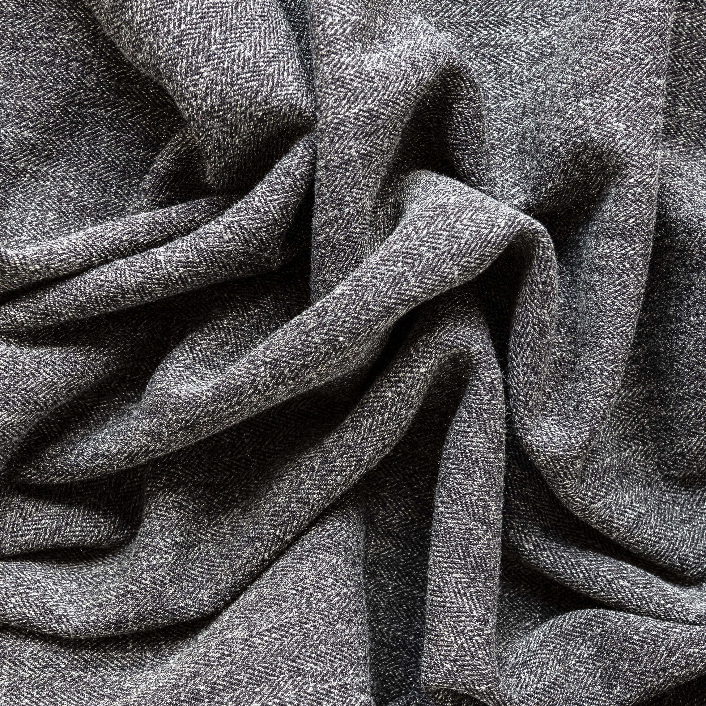
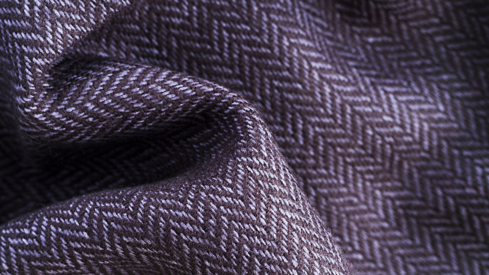
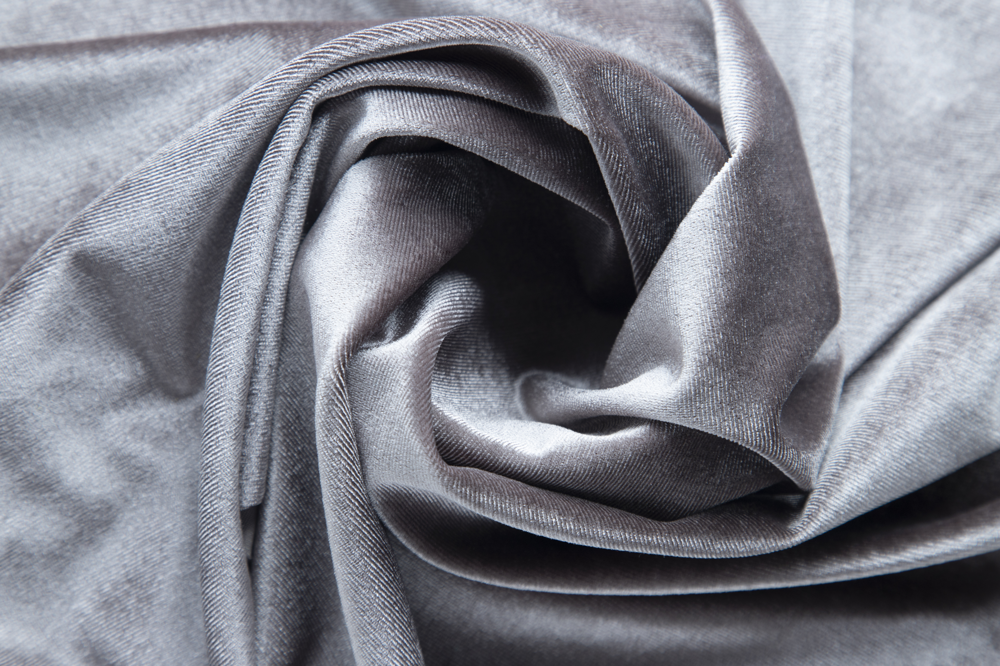

Sportswear
High-performance warp knits with excellent breathability and 4-way stretch.
Request Sample

Curtains
Durable, wrinkle-resistant warp knits with excellent drape and light filtration.
Request Sample



Interlock
Double-knit fabric with smooth finish on both sides. Stable and structured.
Request Sample


